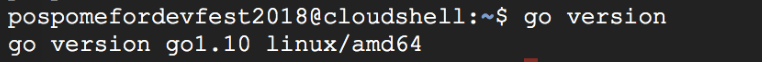

Google Cloud Platformが提供するサービスの1つです。Google Cloud Shellはブラウザ上で動作するシェルであり、Google Cloud Platformが提供する各クラウドリソースに対してアクセスすることができます。Google Cloud Shellは無料で利用することができます。
Google Cloud ShellにはGoがプリインストールされているので、Goの開発環境を構築することなくGoでコードを書くことができます。
Google Cloud Shellを利用するにはGoogle Cloud Consoleへアクセスする必要があります。次のURLからGoogle Cloud Console へアクセスしましょう。
Google Cloud Console を利用したことがない方は以下の規約同意画面が表示されます。利用規約を確認し、同意できる場合のみ画面の一番下にある"すべてのサービスと関連APIについて、適用される利用規約を遵守して利用することに同意します。"の選択肢を"はい"に選択し、"同意して続行"を選択してください。

Google Cloud Console にアクセスできたら、画面上の右上にある Google Cloud Shell を起動するアイコンを選択してください。

Google Cloud Shellを起動したことがない方は以下の画面が表示されます。画面右下の "CLOUD SHELL の起動"を選択してください。

Google Cloud Shellの起動が成功すると画面下にコマンドラインが表示されます。

早速Goがインストールされているかを確認しましょう。
Google Cloud Shellでgo versionを実行し、Goのバージョンを確認しましょう。次のように表示されるはずです。

以上で Google Cloud Shell のセットアップは終わりです。Google Cloud Shellを利用してGoに触れてみましょう！